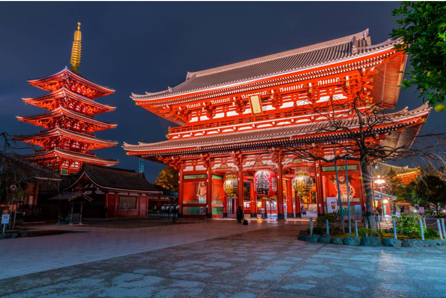

<!DOCTYPE html>
<html lang="no">
<head>
    <meta charset="UTF-8">
    <meta name="viewport" content="width=device-width, initial-scale=1.0">
    <title>sted jeg vil</title>
    <link rel="stylesheet" href="style.css"
</head>
<body>
    
</body>
</html>
<header>
<h1>tokyo</h1>
</header>
<main
<p>jeg har alltid syntes at det er veldig interessant kultur, og jeg er veldig glad i japansk media. jeg er veldig veldig glad i pokemon, og de har jo så klart ganske mye pokemon relaterte ting i tokyo, siden det er der det først ble oppfunnet. er også veldig glad i japanske filmer spesielt filmene til <a href="https://letterboxd.com/director/akira-kurosawa/">Akira Kurosawa</a> som seven samurai og ran, også er jeg veldig glad i anime som chainsaw man og bleach.</p>
<p>jeg har alltid syntes det har vært gøy å se på gamle kule bygg, som det er mye av i tokyo og nærområdet, som f.eks senso-ji som ligger i sentrum av tokyo. rett og slutt syntes jeg tokyo bare virker som en veldig interessant by med masse kule og gøye ting man kan gjøre. så dette er da hvorfor jeg vil reise til tokyo.</p>

<h2>3 ting jeg vil oppleve</h2>
<li>1. dra til den offisielle pokemon center butikken i shibuya, tokyo</li>
<li>2. kjøpe billig manga på manga butikker siden det er fryktelig dyrt i norge</li>
<li>3. smake på ny og god mat som man ikke finner så lett i norge</li>
<li>les mer om hva man kan gjøre i tokyo på <a href="https://www.tuimusement.com/us/japan/tokyo/d_189-c_84/" target="_blank">tui - best things to do in tokyo</a></li>

<h2>fakta om japan og tokyo</h2>
<li> - tokyo er hovedstaden i japan, og den ligger på den østlige kysten ca i midten av landet</li>
<li> - i tokyo snakker de japansk</li>
<li> - i japan bruker de valuttaen yen, 1 yen = 0.061 nok</li>
<li> - det anbefales å dra dit om våren siden det er da temperaturen er mest taklebar og hvis man er heldig så kan man se de kjente kirsebær treerne</li>
<li> - en fun fact om tokyo er også at det er verdens største land.</li>

 <p class="tips">lær deg politi nummeret, alltid lås hotelrommet, vær forsiktig rundt folk med tattoering. </p>
 </main>

 <footer>
    <p id="copyright">laget av magnus roos 2026</p>
 </footer>